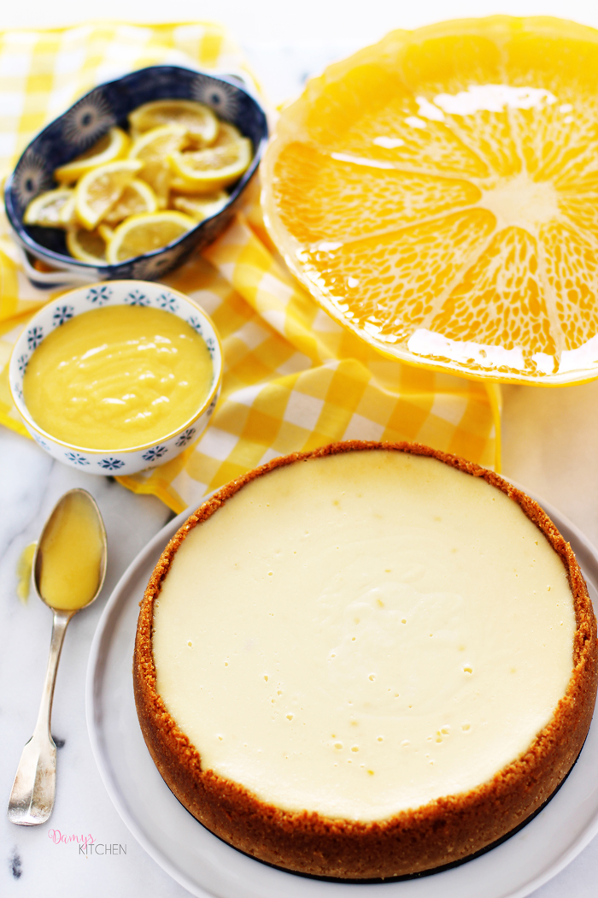

Görüntüsüyle ruhu doyuruyor, ferahlatıyor önce.. Bir lokma aldığınızda ise nasıl da görünümüyle birbirini tamamladığını anlıyor insan. Uzun zamandır içime sinen bir limonlu cheesecake tarifi ararken en mükemmeli karşıma çıktı.. Kremamsı tok dokusu ile Brownie Cheesecake tarifindeki kıvam ve lezzetle çok benzeşiyor. Neredeyse aynı, bu tarifte bir tık limon aroması fazla elbette. Üzeri için ise az yumurtalı bir sos seçeneği aradım, biraz da krema ekledim, böylece çok hafif ve asla yumurta kokmayan, bol limonlu bir sos çıktı ortaya. Yemelere doyamazsınız..
Sunumunu ise şu meşhur Cheesecake Factory tarzında yaptım; cheesecake'lere çırpılmış krema süslemesi çok ama çok yakışıyor. Pastalara ufak da olsa yükseklik katmak her zaman gösteriş katıyor.
Tarif, DamysKitchen'a aittir.